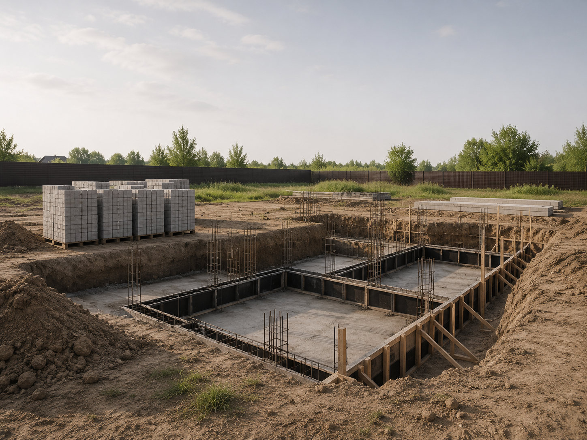
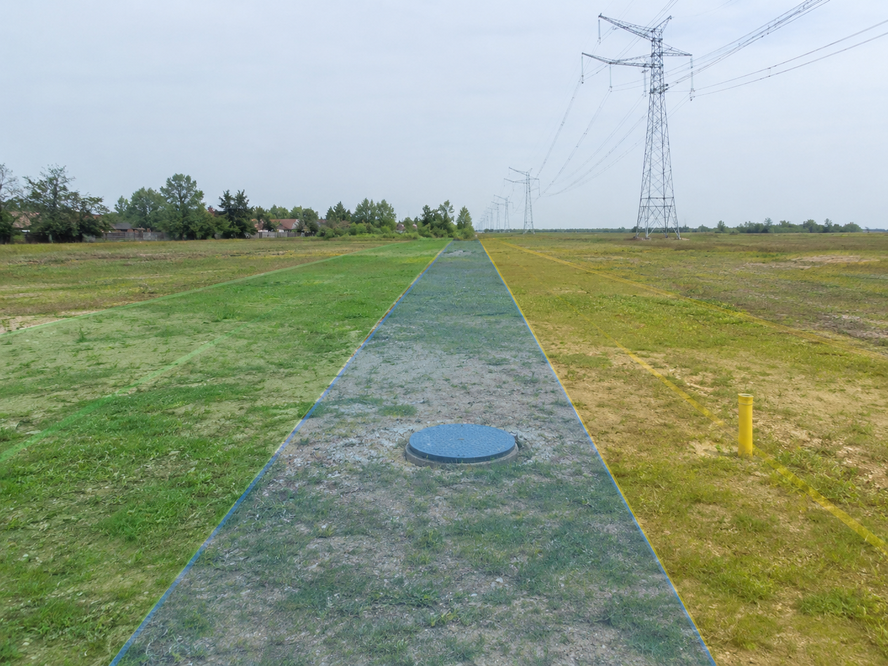
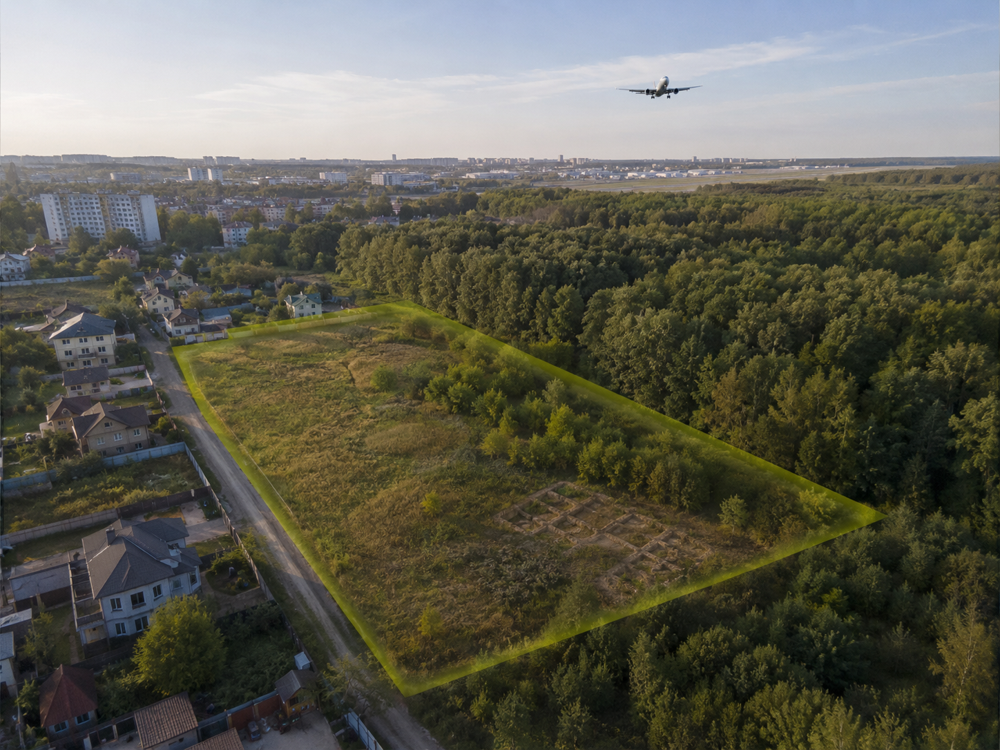
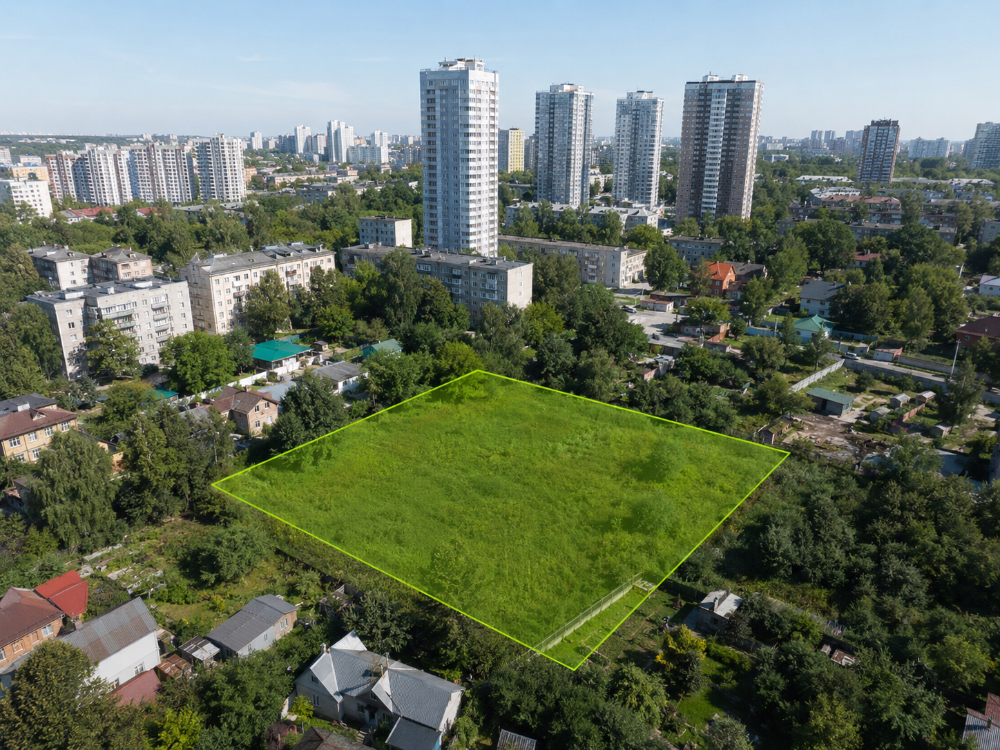

Москва и Московская область
Чтобы вы не купили землю, на которой нельзя построить.
Проверка земельных участков перед покупкой.
Находим скрытые охранные зоны, градостроительные запреты и юридические проблемы. Защищаем ваш капитал, чтобы вы не купили землю, на которой невозможно строить.
37°37′04″ E
Анализ участка
4 слоя риска
ПЗЗЗОУИТВРИГПЗУ
13+лет практики в девелопменте
10–20страниц с картами, схемами и выводами
100%независимость в интересах покупателя
Почему покупка участка
— это риск?
Вы можете купить земельный участок и только на этапе проектирования узнать, что:
Посмотреть риски ↓площади попадает в скрытые охранные зоны (газ, ЛЭП, вода).

04 / ВРИ
Текущий ВРИ (Вид разрешенного использования) не позволяет реализовать ваш проект.
Действуют жесткие ограничения памятников природы, археологии и приаэродромной территории.
→Прозрачный алгоритм работы
Процесс аудита не требует вашего личного участия в бюрократических процедурах. Всю аналитическую работу я беру на себя.
Бесплатная экспресс-оценка →- 01Шаг 1
Заявка
Вы отправляете кадастровый номер рассматриваемого участка.
- 02Шаг 2
Первичный анализ
Я провожу базовую проверку, после чего мы обсуждаем параметры вашего будущего объекта.
- 03Шаг 3
Глубокий аудит
Я провожу проверку правоустанавливающих документов, градостроительных регламентов и инфраструктуры.
- 04Шаг 4
Заключение
Вы получаете развернутый официальный отчет со схемами и принимаете безопасное решение о покупке.
Форматы экспертной поддержки
Выберите оптимальный уровень работы в зависимости от стадии вашей сделки и стоящих задач.
01→
Экспресс-аудит участка
от 35 000 ₽Быстрая проверка по ключевым базам данных. Идеально для оперативного отсева заведомо проблемных участков на этапе первичного выбора.

02→
Полная градостроительная экспертиза (Due Diligence)
от 150 000 ₽Глубокий анализ земли перед покупкой по 5 уровням. Выявляем все скрытые ЗОУИТ, анализируем ПЗЗ и Генплан. Итог: официальное экспертное заключение на 10-15 страниц.

03→
Стратегическое сопровождение проектов
ИндивидуальноКомплексное управление рисками для девелоперов и инвесторов: от глубокого аудита актива до успешного получения ГПЗУ и Разрешения на строительство.
Ваш независимый эксперт в сфере градостроительства и землепользования.
Меня зовут Александр Сысуев. Мой практический опыт в сфере девелопмента, земельного права и управления строительными проектами превышает 13 лет.
Я не просто "проверяю документы". За моими плечами — десятки сложных проектов, которые я сопровождал от этапа подбора актива до успешного получения разрешительной документации (ГПЗУ, РНС) и реализации. Я знаю всю «кухню» согласований ведомств Москвы и области изнутри, поэтому вижу критические риски там, где обычные юристы видят лишь чистую выписку из ЕГРН.
Моя главная задача — выступать на стороне инвестора. Я нахожу скрытые ограничения, о которых умалчивают продавцы, и помогаю вам принимать взвешенные, финансово безопасные решения. Моя экспертиза — это самая надежная страховка ваших многомиллионных вложений.
13лет практики
> 1 МЛРДрублей сохранено клиентам
100%независимость
Факты, гарантирующие вашу безопасность
Почему мне доверяют подбор территории в Москве?
100% независимость.
Я работаю исключительно в интересах покупателя, не аффилирован с продавцами и агентствами недвижимости.
13 лет практики.
Опыт реального девелопмента и сопровождения проектов позволяет мне видеть риски на несколько шагов вперед.
> 1 МЛРД рублей.
Общая сумма средств, сохраненных моим клиентам за счет своевременного отказа от покупки проблемных активов.
Официальные отчеты.
Вы получаете не устный "совет", а документ (от 10 до 20 страниц) с картами, схемами и обоснованными выводами.
Отправьте кадастровый номер участка и получите первичную оценку бесплатно.
Результат - в течение
рабочего дня Никаких обязательств до подписания договора Конфиденциальность гарантирована
рабочего дня Никаких обязательств до подписания договора Конфиденциальность гарантирована